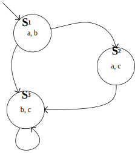

Notes on Model Checking, No. 1: Kripke Structure
When I picked up Clarke et al.’s Model Checking, I’d heard the name of model checking for a long time. It appears everywhere in papers concerning software testing as a foundation of other methods. However, I could never figure out what the term stands for. I knew models in model theory, but how could they use it to verify a computer program? Do they model a program as a model and write logical assertions on it? We will find that this is indeed what they do.
A Glimpse at Models in Model Theory
Before introducing model checking, let’s have a glimpse at models in model theory. Informally, a model is an assignment to vocabularies in a logical formula. It stipulates the meaning of these vocabularies and thus the whole formula. We can only discuss the truth value of a logical formula respecting a model. For instance, suppose we have a first-order formula $$\forall v.(\mathrm{even}(v)\vee\mathrm{odd}(v))$$ Without further clarification, we don’t know what it means: for example, what can $v$ be? If the one who gives the formula details that $v$ can range in all natural numbers, then in this model, the formula is “true”; otherwise, if $v$ ranges in rational numbers, it is not true. If a model $\mathfrak{M}$ makes a formula $f$ true, we denote it as $\mathfrak{M}\models f$, read as “$\mathfrak{M}$ satisfies $f$” or “$\mathfrak{M}$ models $f$.”
From Model Theory to Model Checking
The relation between model theory and model checking is somewhat like the relation between economics and finance (I’m not a professional in business disciplines; let me know if you have any better analog). We can intuitively explain this analog by typical questions researchers of model theory and model checking may ask. A model theory researcher may ask: “Does there exist any model satisfying this formula?”; a model checking researcher may ask: “Does this specific model satisfy this formula?”1 In this article, we focus on the latter questions since the topic is about model checking.
But wait! Why do we need to do that? Why do we want to know whether one specific model satisfies a formula? It is because we don’t put any constraint on the elements in a model. Although in the above example, elements the model contains are natural numbers or rational numbers, they don’t have to be such arithmetic objects. They can be, say, components of a computer program; in turn, the model represents a whole computer program. Also, we don’t put any constraints on the logic used to write the formula. It doesn’t have to be first-order logic but can be something more expressive. It can be temporal logic that can describe time. Now, look at what we have: we have a model representing a program and a formula describing time-dependent properties. Boom! We find a way to describe the behavior of a program: the model depicts the program, and the logical formula is the condition it must meet when running (when a program starts to run, its time begins). When a model $\mathfrak{M}$ representing a program $\mathfrak{P}$ satisfies a formula $f$ describing a property $p$, we know that the program $\mathfrak{P}$ has the property $p$.
The Models Used in Model Checking
Model checking selects Kripke structures2 among many choices to represent programs. A Kripke structure is an annotated directed graph that describes a transition system, that is, a system with discrete states and transitions between these states. An example is as follows.

The above Kripke structure has three states, $S_1$, $S_2$, and $S_3$, and four transitions, $S_1\rightarrow S_2$, $S_1\rightarrow S_3$, $S_2\rightarrow S_3$, and $S_3\rightarrow S_3$. $a$, $b$, and $c$ are attributes of the states on which the logical formula may make assertions. Possible execution of the system may be $S_1, S_2, S_3, S_3, …$ Some important points of Kripke structures:
- The number of states and transitions needs to be finite.
- There can be multiple outedges from one state, giving Kripke structures the ability to handle nondeterminism naturally.
- Some states should be marked as initial states (characterized by an inedge without a tail), from which the system’s execution begins. In the above example, $S_1$ is the only initial state.
- There can be self-loops, where a state has an outedge pointing itself. In a self-loop, the system may stay in the self-looped state forever.
Moreover, model checking imposes an extra constraint on the Kripke structures: every state must have at least one outedge. It means that once the system starts executing, it can never stop. One can easily modify a Kripke structure with halt states (states with no outedges, so the execution can only halt) to this form by just adding self-loops to all halt states.
Characteristics of Kripke structures restrict the ability of model checking: model checking cannot check any program with infinite states3, for example, programs dealing with variable-length strings. However, this is a sensible trade-off between the expressiveness and the simplicity of computing: no computer can represent an arbitrary infinite graph, let alone calculate assertions on it.
Hitherto, we have given a synopsis of the concepts of models in model theory and model checking. In the next post, we will touch on another core concept in model checking—the left-hand side of the notation $\mathfrak{M}\models f$—logical formulas in model checking.
However, before we conclude this post, we have to supplement a slight difference between the models in model checking and models in model theory: the former cannot be strictly subsumed into the latter. As to be detailed in the next post, logical formulas in model checking can only assert properties upon a state. We cannot say $\mathfrak{M}\models f$, but instead $\mathfrak{M},s\models f$, where $\mathfrak{M}$ is a Kripke structure, $f$ is a formula, and $s$ is a state of $\mathfrak{M}$. That means the equivalent of models in model theory in model checking is Kripke structures plus one of their states. Still, for conventional reasons, researchers of model checking simply refer to Kripke structures as “models,” and we will follow this convention hereafter. Typically, we only check the initial states of a Kripke structure against some formula $f$ because all successive states of these initial states can be specified by this formula through temporal quantifiers. The unreachable states from the initial states do not affect the system’s actual behavior. So, you will see a lot of seemingly model theory equations $\mathfrak{M}\models f$ in model checking, while according to the preceding paragraph, it is illegal in model theory. Remember, in model checking, such an equation is just an abbreviation of $$\bigwedge_{s\in\mathrm{initialStatesOf}(\mathfrak{M})}\mathfrak{M},s\models f$$
-
A joke: A programmer walks into a bar, saying he has proved twin prime conjecture. All mathematicians are shocked and ask him how he could have done this. He says: “I traverse all integers between 2 and 2,147,483,647.” ↩︎
-
Saul Kripke is a preeminent American philosopher who significantly impacted the fields of analytic philosophy and mathematical logic. I’m interested in his works and may choose some to read and write on this blog. ↩︎
-
Such checks can be achieved by formal methods which involve a labor-intensive process to prove the correctness of a program, or if you don’t require a 100% guarantee, a multitude of software testing technologies. I will cover these topics on this blog in the future. ↩︎